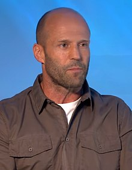

Jason Statham (Shirebrook, Derbyshire, Reino Unido; 26 de julio de 1967)1es un actor de cine, modelo y ex clavadista británico mundialmente famoso por sus papeles en películas de acción y aventura.
Dentro de sus participaciones figuran Lock and Stock (1998), Snatch (2000), Revólver (2005), La carrera de la muerte (2008) y Blitz (2011), así como por interpretar a Chev Chelios en la película Crank (2006) y su secuela Crank: High Voltage (2009), a Arthur Bishop en las películas The Mechanic (2011) y su secuela Mechanic: Resurrection (2016), por protagonizar la trilogía de Transporter como Frank Martin, a Lee Christmas en la serie películas de The Expendables y a Deckard Shaw en la serie de películas de Fast & Furious.
Con su aspecto de tipo duro, Jason Statham supo hacerse un hueco en el cine, siendo su especialidad el género de acción, afianzando que los papeles de riesgo son lo suyo. Por lo general realizó sus propias escenas de acción sin dobles2 y destaca por ser encasillado como un antihéroe en sus personajes
ason Statham nació el 26 de julio de 1967 en Shirebrook, Derbyshire, Inglaterra,45 hijo de Eileen Yates y Barry Statham, ambos vinculados al mundo del espectáculo y el arte, ya que su madre fue actriz y bailarina, y su padre también actor y cantante
Se crio en Great Yarmouth, Norwich. Durante su etapa escolar Jason Statham fue miembro indiscutible del equipo de fútbol de su escuela (1978-1983). Sin embargo, tuvo más logros practicando los saltos ornamentales, lo cual hizo de manera profesional, participando en importantes torneos internacionales como los Juegos de la Commonwealth en 1990,7 llegando a ubicarse en la décimo segunda posición en 1992 y fue miembro del Equipo Nacional Británico de salto de natación durante doce años. No queriendo seguir la carrera de su padre en un mercado local, decidió alistarse en el Ejército Británico, entrando a formar parte de un regimiento de paracaidistas que abandonó unos años más tarde debido a su inclinación por el arte desde temprana edad.
Se inició en la moda gracias a que un agente de modas lo vio mientras entrenaba y como consecuencia sin dudarlo incursionó en la industria de la moda. Tras su fugaz pero fructífera carrera en el modelaje, estuvo durante un corto tiempo en el negocio de su padre en un mercado local. Sin embargo, las ambiciones de Statham fueron mucho más grandes y decidió dedicarse a la actuación
En cuanto a su vida sentimental, Jason Statham estuvo casado con la modelo y actriz inglesa Kelly Brook desde 1997 hasta 2004. Actualmente es pareja de la modelo Rosie Huntington-Whiteley desde 2010, con quien tuvo un hijo el 24 de junio de 2017. Statham es un experto en artes marciales mixtas; y practica Kick boxing, taekwondo, wushu (deporte) y jiu-jitsu.10Entre sus aficiones está el ser coleccionista de vehículos, entre los que destacan el su garaje son; Porsche 911 GT2 blanco, Lamborghini Murciélago naranja, Audi R8 y Audi A8, Aston Martin DBS Volante y un Jaguar E-Type, entre otros.
